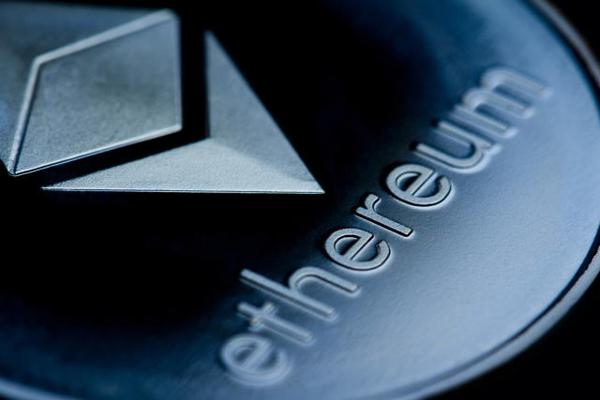

Types of Cryptocurrency
Bitcoin
Bitcoin, the pioneer of the cryptocurrency world, was created in 2009 by an anonymous individual or group of individuals using the pseudonym Satoshi Nakamoto. As the first decentralized digital currency, Bitcoin introduced the concept of blockchain technology, which underpins most cryptocurrencies today. Bitcoin operates on a peer-to-peer network that allows users to send and receive payments without needing a central authority or intermediary. Its fixed supply of 21 million coins makes it a deflationary asset, often compared to digital gold. Over the years, Bitcoin has gained widespread acceptance and is often considered a store of value and a hedge against traditional financial system uncertainties.
Ethereum
Launched in 2015 by Vitalik Buterin and a team of developers, Ethereum expanded the capabilities of blockchain technology beyond mere transactions. Ethereum introduced the concept of smart contracts, self-executing contracts with the terms of the agreement directly written into code. This innovation allows developers to create decentralized applications (DApps) that run on the Ethereum blockchain, enabling a wide range of use cases from decentralized finance (DeFi) to non-fungible tokens (NFTs). Ethereum's native cryptocurrency, Ether (ETH), is used to power these applications and compensate network participants for their computational work. Ethereum is undergoing significant upgrades, including the transition to Ethereum 2.0, which aims to improve scalability, security, and energy efficiency.
BNB
Binance Coin (BNB) was created by the Binance cryptocurrency exchange, one of the largest in the world, to facilitate operations on its platform. Initially launched on the Ethereum blockchain as an ERC-20 token in 2017, BNB later migrated to its own blockchain, the Binance Chain. BNB is used for various purposes within the Binance ecosystem, including paying for transaction fees at a discounted rate, participating in token sales on Binance Launchpad, and more. Beyond its utility on the exchange, BNB has grown to be one of the largest cryptocurrencies by market capitalization, reflecting Binance's prominence in the crypto space and its ongoing efforts to expand its ecosystem through ventures like Binance Smart Chain (BSC).
Dogecoin

Dogecoin started as a joke in 2013, created by software engineers Billy Markus and Jackson Palmer to parody the proliferation of altcoins. Named after the popular "Doge" meme featuring a Shiba Inu dog, Dogecoin quickly developed a strong online community. Despite its humorous origins, Dogecoin has been used for real-world applications, such as tipping content creators on social media and raising funds for charitable causes. Its low transaction fees and fast processing times make it suitable for microtransactions. In recent years, Dogecoin has gained mainstream attention, partly due to endorsements from high-profile personalities like Elon Musk. This popularity has propelled Dogecoin into the ranks of major cryptocurrencies, highlighting the unpredictable and community-driven nature of the crypto market.